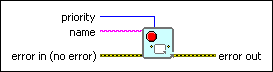

Stop Timed Structure VI
Owning Palette: Timed Structures and VIs
Requires: Base Development System (Real-Time, Windows)
Aborts the execution of the Timed Loop or Timed Sequence structure you enter in name.
If you attempt to abort a running Timed Loop, the Timed Loop immediately executes the current iteration and returns Aborted in the Wakeup Reason output of the Left Data node.
Related Information
Aborting the Execution of a Timed Structure (Real-Time, Windows)

 Add to the block diagram Add to the block diagram |
 Find on the palette Find on the palette |